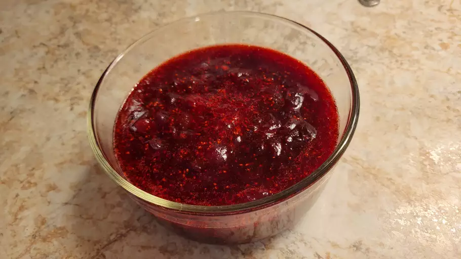

Cranberry Sauce

Description
Super Easy Cranberry Sauce
Ingredients
- 12 ounces cranberries
- 1 cup white sugar
- 1 cup orange juice
Directions
- Gather all ingredients
- Dissolve sugar in the orange juice in a medium saucepan over medium heat
- Stir in the cranberries and cook until they start to pop, about 10 minutes
- Remove from heat and place sauce in a bowl. It will thicken as it cools.
- ENJOY!!